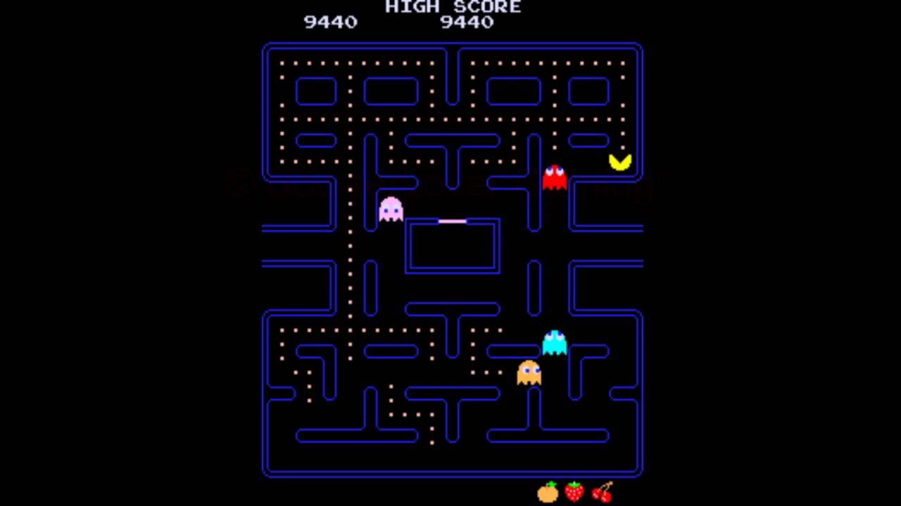
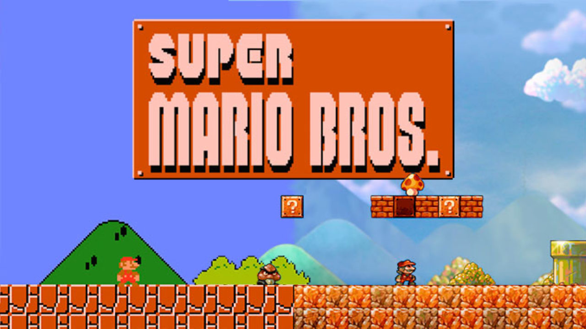
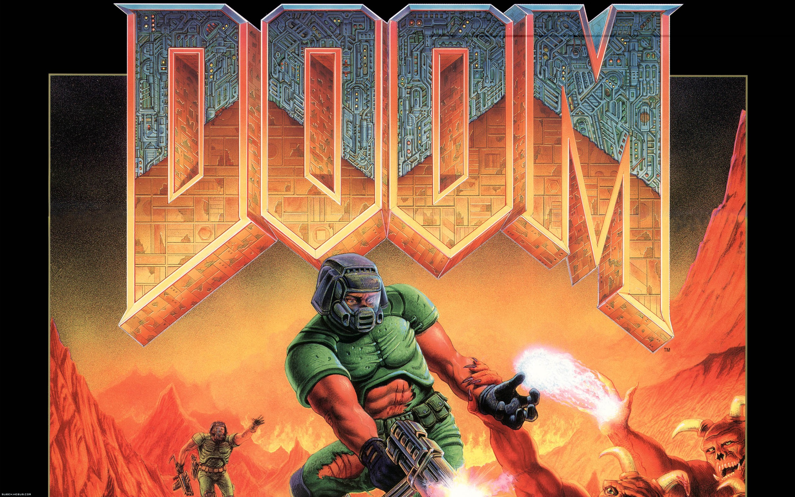
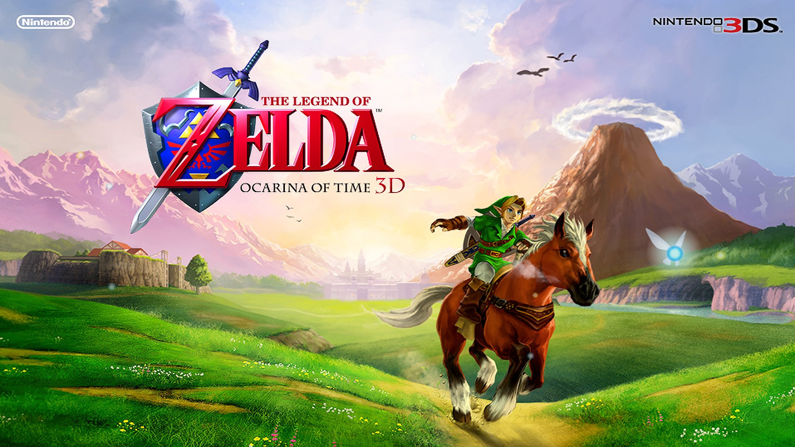
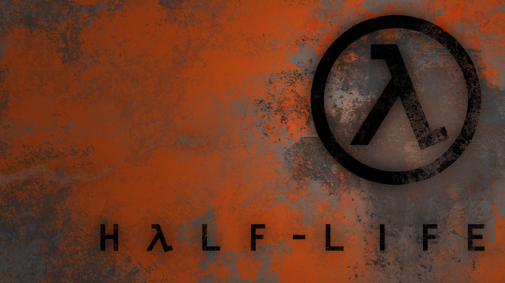
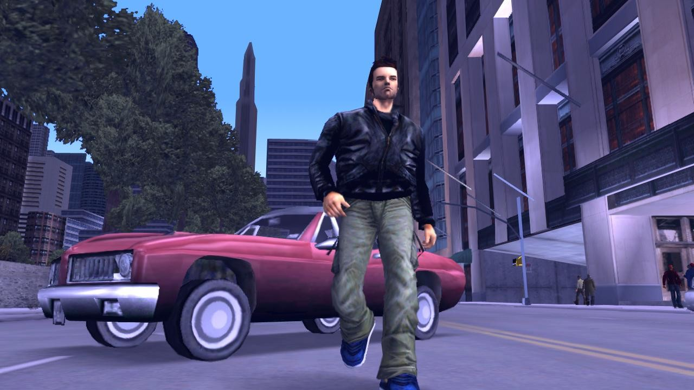

Los videojuegos emocionan a grandes y chicos. Pero más allá de los juegos favoritos de cada uno, existen algunos videojuegos que han marcado la historia de esta forma de entretenimiento. Aquí les presentamos a continuacion los videojuegos mas influyentes de la historia desde nuestro punto de vista y quizas con suerte las suyas también .
Pac-Man (1980)
Pac-Man es un icono de la cultura pop de los años ochenta y ahí radica su fuerza. Según indica el autor de la lista, el ‘comecocos’ popularizó el formato de exploración de laberinto, así como elementos tan elementales hoy en día, valga la redundancia, como los ítems, bonus e incluso la inteligencia artificial de los enemigos. Pero su mayor logro es estético: el personaje de Pac-Man en sí mismo, supuestamente ideado como una pizza a la que le falta una porción. Se estrenó en recreativas y ya ha pasado por todas las plataformas imaginables y alguna más.
Tetris (1984)
.jpg)
Creado por el ingeniero ruso Alekséi Pázhitnov en 1984, Tetris es un mito viviente. La explosión del fenómeno, no obstante, se dio unos años más tarde, cuando se lanzó para la Game Boy de Nintendo (1989). ¿Y por qué destaca en este caso Tetris? Su popularidad fue merecida: mecánica de juego muy sencilla, dificultad de juego muy alta. Bajo ese modelo se inspiró toda una nueva generación de títulos abstractos de rompecabezas; y no solo eso: la psicología llegó a acuñar el término «efecto Tetris» para describir aquellas experiencias de ocio que se infiltran en los patrones mentales y sueños del jugador.
Super Mario Bros (1985)
La franquicia de Nintendo tenía su puesto asegurado en esta lista por varios motivos, y la incuestionable popularidad del personaje es sin duda el más llamativo. Pero esa no es la razón. Tampoco que inventara el género de las plataformas, pues Donkey Kong -tambi de Nintendo y con Mario- ya lo había hecho. La razón es la «perfecta sensación de juego» que trajo el título en NES; la evasión y diversión que ofrecía mando en mano, con una calidad técnica y de manejo nunca antes lograda. «Casi cada juego con un mundo explorable y un personaje controlable ha tomado algo de él», señala el artículo original con acierto; y lo mismo se podría decir de Super Mario 64 en los que a gráficos en tres dimensiones se refiere, agregamos nosotros.
Doom (1993)
Pero Doom no fue el primero de su clase, ni siquiera el primero en popularizar el género de los juegos de disparos en primera persona, aunque tardó poco en convertirse en el referente absoluto del mismo hasta que una década después apareciese en escena la primera entrega de Call of Duty. Nadie duda de su importancia, pero, ¿qué hace aquí? «Doom siempre fue más que un blaster sin cerebro, estableciendo el tono, la velocidad y las convenciones de diseño de juegos 3D para siempre. La gente discute sobre cuál fue el primer FPS verdadero, pero fue Doom el que atrapó la imaginación colectiva y la hizo pedazos», destacan. id Sofrware publicó un remake el año pasado y lo único que podemos añadir es que lo volvieron a bordar.
Legend of Zelda: Ocarina of Time (1998)
Era inevitable que el considerado como el mejor juego de la historia estuviese presente. Solo por tal apelativo ya se lo merece. No es el primer Zelda y no es el mejor Zelda, pero al igual que sucedió con Super Mario 64, la sensación de maestría ha trascendido a cualquier otro fundamento. Podríamos decir que Nintendo «se limitó» a sentar las bases de la gran aventura épica en 3D y nadie puede quitarles el mérito. La riqueza del mundo, la profundidad de la historia… Nunca se había hecho nada semejante y todo lo que vino después le debía algo. Como le debemos todos a Shigeru Miyamoto el haber prendido la chispa de la genialidad tanto con Zelda como con Mario.
Half Life(1998)
un juego hecho por primerizos, ¡Y termino revolucionando los videojuegos de computadora! En una era en la que el PC Gaming era chico, Half-Life vendió *cambia de pagina* ¡8 Millones de Copias! y ganó ¡50 premios al mejor juego del año por múltiples revistas y publicaciones! Al paso del tiempo los jugadores consiguieron un amor por HF. Tanto que se crearon juegos como CS, Team Fortress o Day Of Defeat. Y no solo eso, ¡Sino que Valve contrato a las personas que crearon esos juegos! Haciendo que Valve sea la compañía que mas jugadores de PC ha tenido. Half-Life dejo un antes y un después en el Gaming de PC, pero la vida sigue y Valve se da la idea de tener que crear mas
Lo que llenaba su imaginación era crear un mundo inversivo, un ambiente convincente, una experiencia cohesiva de momento a momento que pudiera gosar de una historia, escenas que te quitaran el aliento, entrar en los ojos de alguien mas, y no como puntuaciones, sino, ser el protagonista. Así, Gabe y Mike dejaron Miicrosoft y contrataron a un grupo de desarrolladores novatos consivieron DOS proyectos, uno llamado Quiver de Ciencia Ficción y Prospero de Acción y Fantasia. De entre los 2 quedo Quiver, juego que cambiaron el nombre a Half-Life, el motor gráfico que utilizaron fue el GoldSource 2.0. Gracias a ID Software (te amo) consiguieron el código a GoldSource, el motor gráfico de Quake, lo estudiaron, lo mejoraron y lo optimizaron, así, creando GoldSource 2.0. Cuando hicieron GoldSource crearon cosas como: Animaciones mas realistas, transparencia e iluminación ademas de sombreado, gráficos 3D poligonale. Ya no trucos o ilusiones ópticas como Doom. Inventaron un sistema para inventar mapas llamado Hammer, una inteligencia artificial muy buena, un sistema de sonido con atmósfera (si disparabas en un pasillo sin nada que hiciera ruido, haría eco, y si disparabas en un pasillo con gente disparando no haría eco). Half-Life 1 fue echo por primerizos, pero Mike y Gabe no son tontos, eran desarroladores prodigio de Microsoft.
Grand Theft Auto III (2001)
Como se ha mencionado con otros juegos de la lista, tal vez Grand Theft Auto III no sea el mejor de la saga, pero su impresionante salto a las tres dimensiones con respecto a los lanzamientos previos pilló descolocada a mucha gente. ¿Un juego en 3D con un mapeado formidable, con una historia adulta, compleja, con libertad de acción y repleta de violencia? La escocesa DMA Design, ahora parte de Rockstar Games, revolucionaba el panorama de los videojuegos con la tercera entrega de los «ladrones de coches» y la entrada en el nuevo siglo se hacía patente, todo con el poderío de la Play Station 2.